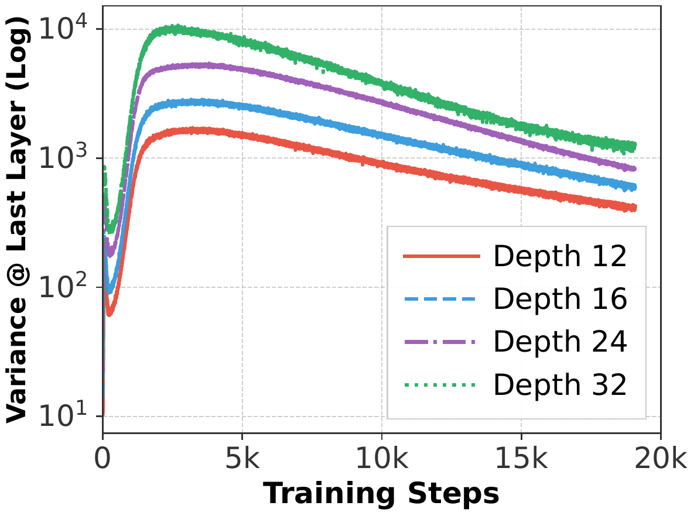
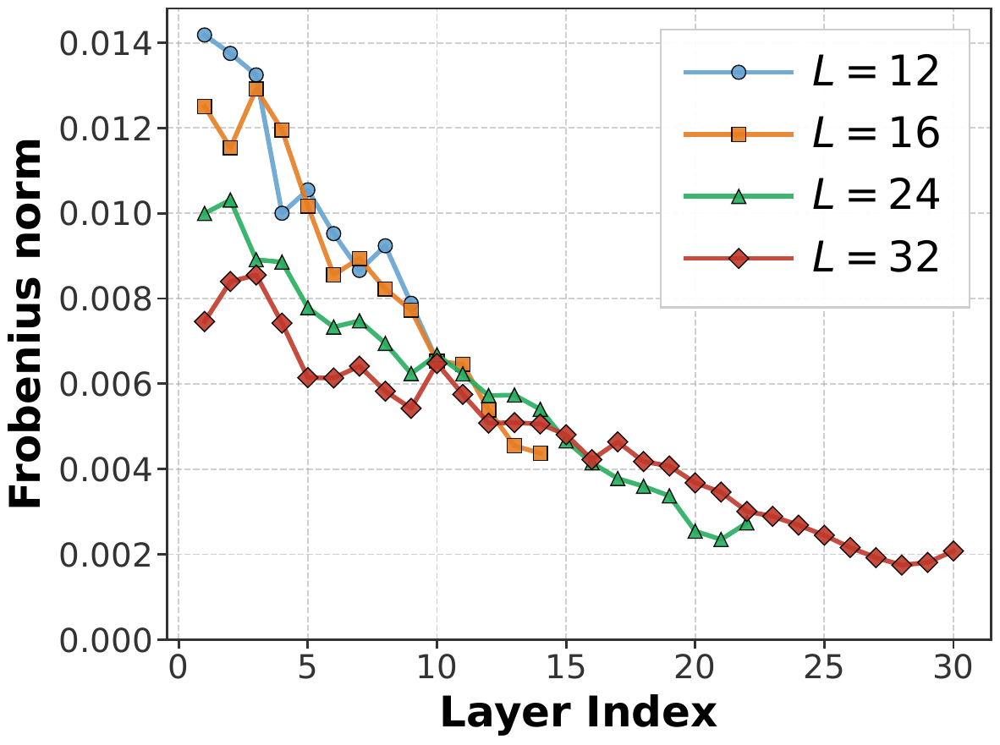
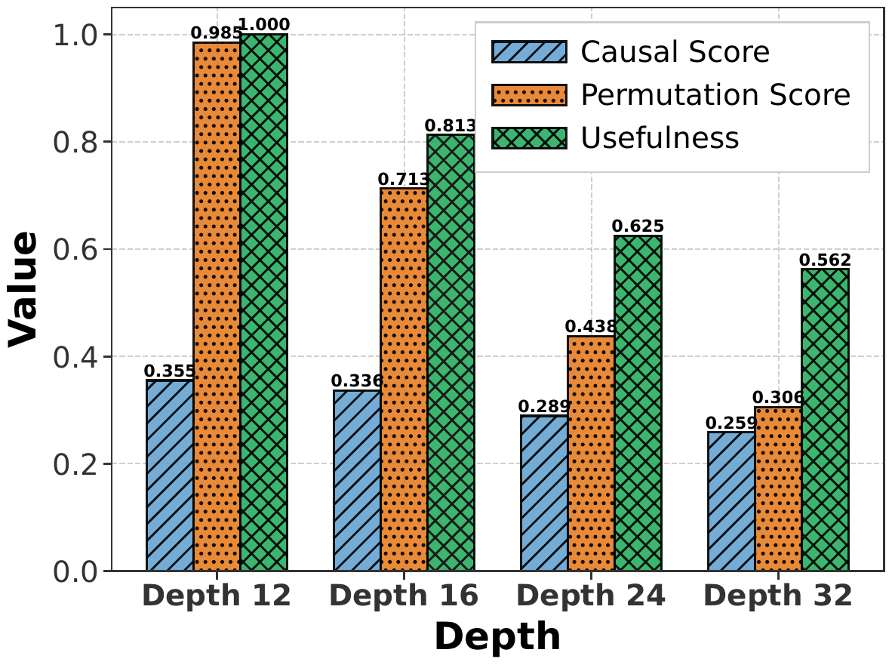
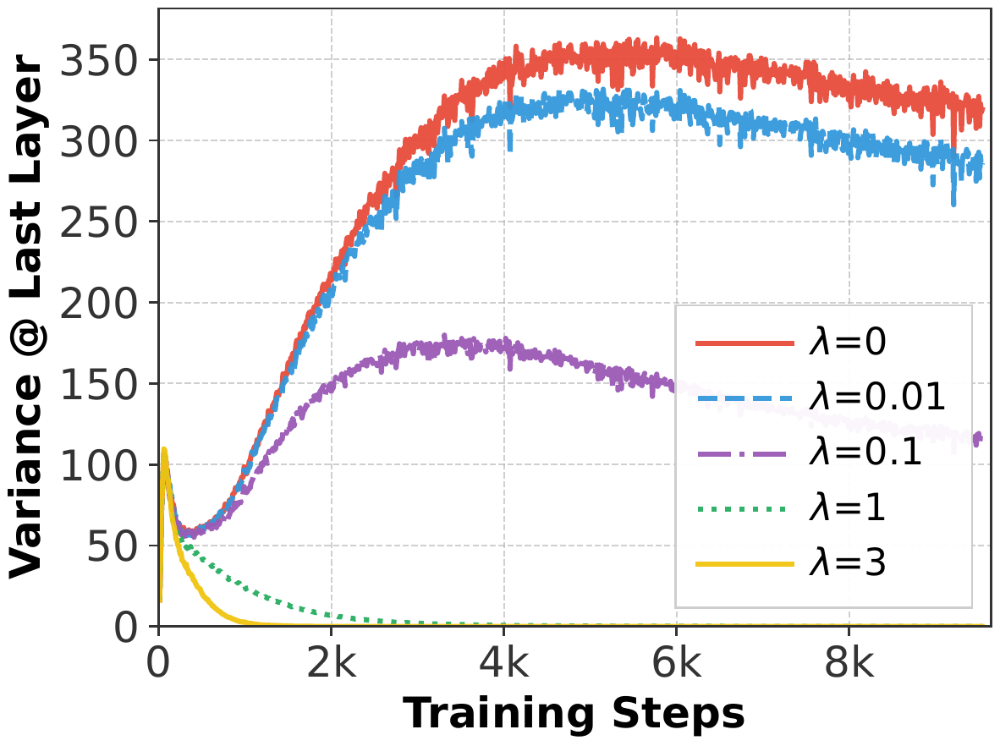
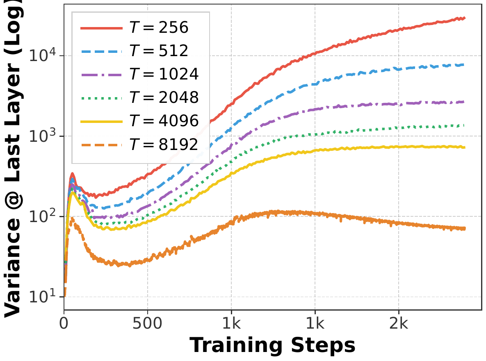
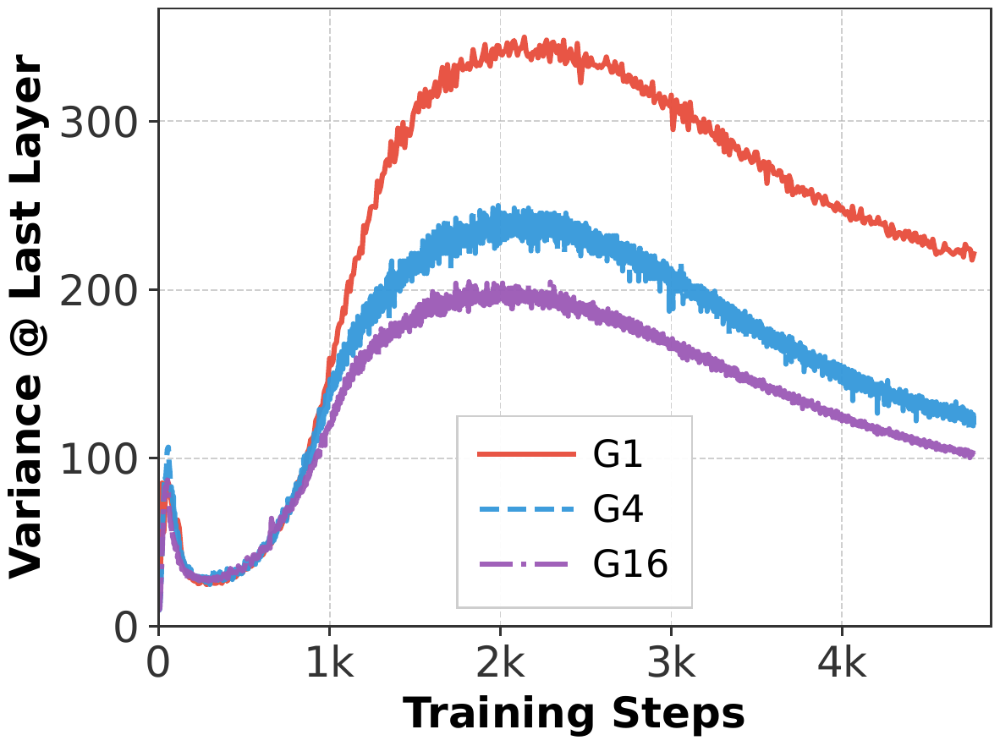
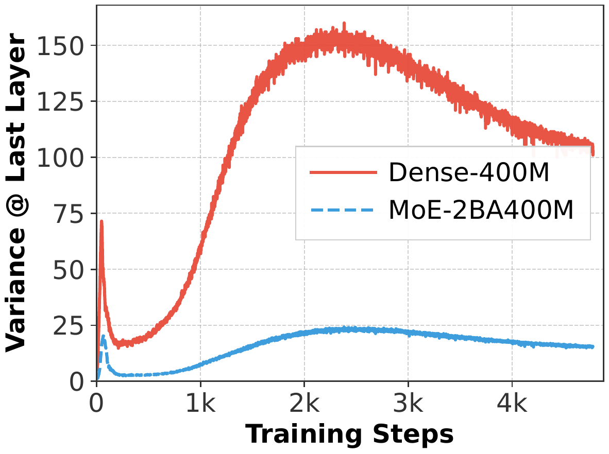
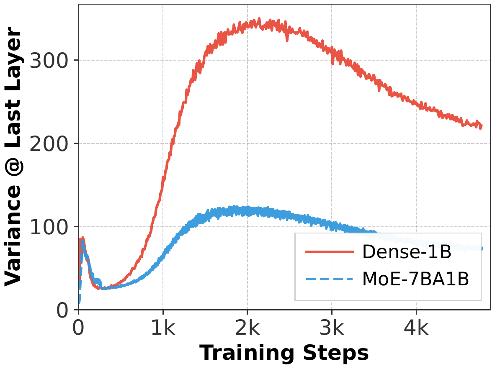
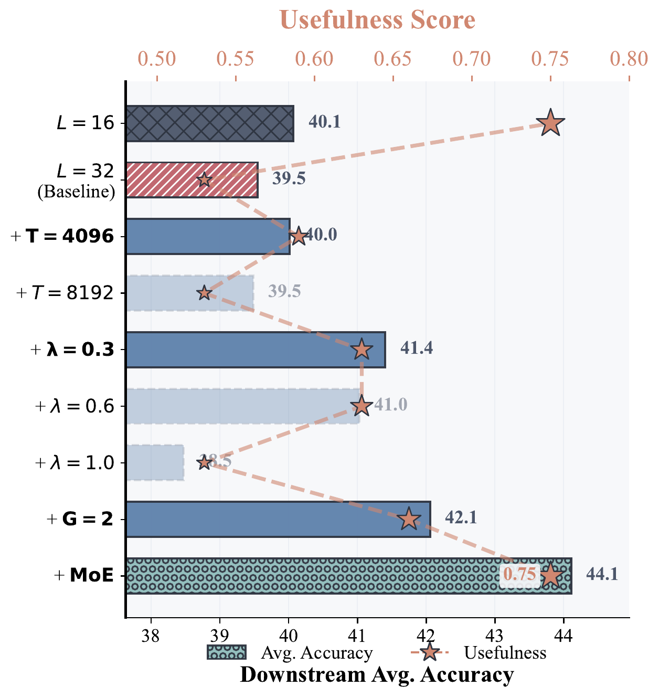

Revealing sparsity as an intrinsic variance regulator that unlocks effective depth utilization
* Equal Contribution † Corresponding Author
1 Zuse Institute Berlin & Technical University of Berlin
2 ETH Zürich
3 Max Planck Institute for Intelligent Systems
4 ELLIS Institute Tübingen
5 Tübingen AI Center
6 Emory University
Deep LLMs suffer from the "curse of depth" — later layers are under-utilized due to variance explosion in Pre-LN architectures.
Sparsity — both implicit (weight decay, long context) and explicit (GQA, MoE) — regulates variance propagation.
Practical recipe achieves 4.6% accuracy improvement on downstream tasks with superior depth utilization.
The Challenge
Recent studies show that later Transformer layers in deep LLMs are frequently under-utilized. Many layers can be removed or permuted with minimal performance degradation.
Output variance grows sub-exponentially with depth
Deep layer Jacobians approach identity
L=32 uses 2.56× parameters but wastes 14 layers

Last-Layer Variance vs Depth

Jacobian ||J-I||_F approaches identity with depth

Layer Effectiveness Scores
The Foundation
Sparsity reduces variance propagation in residual-depth architectures. Smaller mask density (higher sparsity) leads to slower variance growth with depth, mitigating the curse of depth.
Emerges dynamically during training
Enforced by architectural design
Empirical Validation
Implicit Sparsity

Variance vs Weight Decay
| Weight Decay (λ) | PPL ↓ | Usefulness |
|---|---|---|
| λ = 0 | 15.63 | 0.75 |
| λ = 0.01 | 15.20 | 0.75 |
| λ = 0.1 ✓ | 14.83 | 0.81 |
| λ = 1.0 | 15.55 | 0.69 |
| λ = 3.0 | 773.42 | 0.63 |
Optimal λ = 0.1 improves both PPL and usefulness score
Implicit Sparsity

Variance vs Sequence Length
| Sequence Length (T) | PPL ↓ | Usefulness |
|---|---|---|
| T = 256 | 18.51 | 0.69 |
| T = 512 | 15.71 | 0.75 |
| T = 1024 | 14.77 | 0.75 |
| T = 2048 ✓ | 14.51 | 0.81 |
| T = 4096 | 14.52 | 0.81 |
| T = 8192 | 16.30 | 0.75 |
Sweet spot at T = 2048 with optimal perplexity and usefulness
Explicit Sparsity

GQA vs MHA Variance Comparison
| Group Size (G) | PPL ↓ | Usefulness |
|---|---|---|
| G = 1 (MHA) | 14.52 | 0.81 |
| G = 4 | 14.50 | 0.87 |
| G = 16 ✓ | 14.47 | 0.87 |
G=16 achieves best PPL with 7% improvement in usefulness score
Explicit Sparsity

400M Scale

1B Scale
| Model | PPL ↓ | Usefulness |
|---|---|---|
| Dense-400M | 17.56 | 0.87 |
| MoE-2B/400M ✓ | 15.89 | 0.94 |
| Dense-1B | 14.52 | 0.81 |
| MoE-7B/1B ✓ | 13.82 | 0.94 |
MoE outperforms dense counterparts by >2 PPL with higher usefulness

Progressive gains when scaling to L=32 with sparsity ingredients
4.6%
Accuracy Improvement
32-layer, 1.2B-parameter model
Superior depth utilization vs. naive baseline
Sparsity is not just for efficiency — it's a critical variance regulator that mitigates the curse of depth.
Both implicit & explicit sparsity work — weight decay, long context, GQA, and MoE all reduce variance.
Practical recipe yields 4.6% boost — a new perspective on training depth-effective LLMs.
@misc{muhtar2026sparsity,
title={When Does Sparsity Mitigate the Curse of Depth in LLMs},
author={Muhtar, Dilxat and Song, Xinyuan and Pokutta, Sebastian and
Zimmer, Max and Pelleriti, Nico and Hofmann, Thomas and Liu, Shiwei},
year={2026},
publisher={arXiv}
}